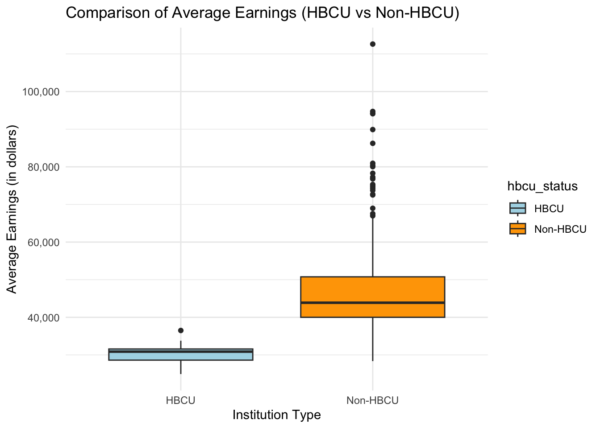
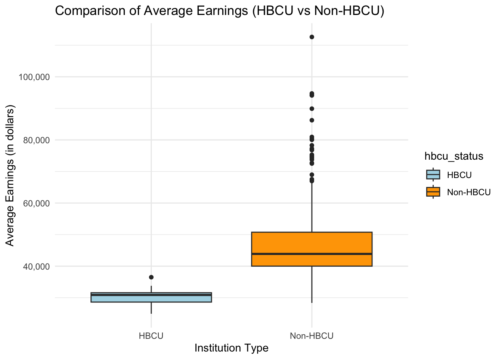
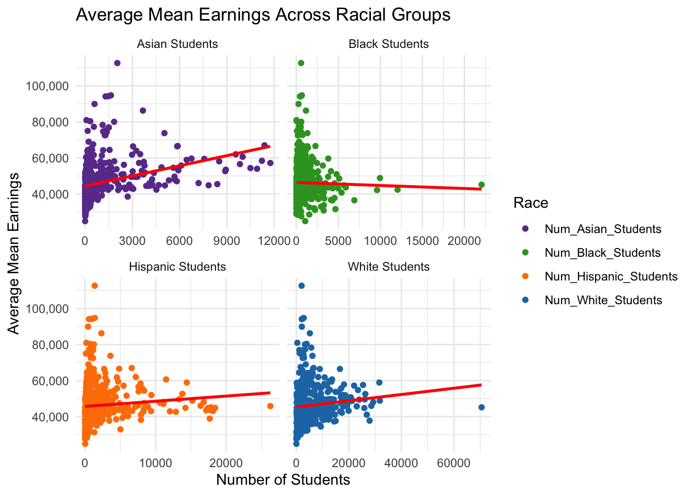
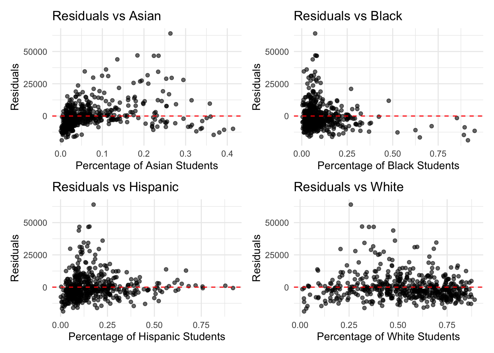

`geom_smooth()` using formula = 'y ~ x'
This comes from the file analysis.qmd.
This analysis aims to investigate the relationship between mean post-graduation earnings, a post-college academic indicator of success, with student characteristics of race and socioeconomic status. By identifying if there exists a correlation between certain student characteristics and pre-college factors and post-college success outcomes, the analysis aims to provide insight on whether financial success is related to student background. The key questions are as followed:
How do academic indicators of success, specifically mean post-college earnings, vary across racial groups and the racial composition of schools?
Does there exist a relationship between socioeconomic status, or student income level prior to entering college, and post-college earnings?
`geom_smooth()` using formula = 'y ~ x'
Coefficients, Standard Errors and p-values: Estimate Std. Error Pr(>|t|)
(Intercept) 44723.0033897 573.50947741 8.295763e-290
Num_White_Students 0.1675265 0.08495377 4.914026e-02
Num_Black_Students -0.9476908 0.35300530 7.491702e-03
Num_Hispanic_Students -0.3944273 0.17099896 2.146745e-02
Num_Asian_Students 2.2823179 0.27884623 2.099718e-15
R-squared:Multiple R-squared: 0.1393846 Adjusted R-squared: 0.1327898
F-statistic and p-value:F-statistic: 21.13567 on 4 and 522 DF, p-value: 3.612555e-16 For this model, every race variable from the cleaned dataset is being included in order to build a simple linear regression. It shows what happens to median earnings when the racial composition changes, assuming no other factors included.
Num_White_Students: A one White student increase in a school is associated with a $0.168 increase in the expected value of mean earnings of students who have graduated but it is not significant (p = 0.947).
Num_Black_Students: A one Black student increase in a school is associated with a $0.948 decrease in the expected value of mean earnings of students who have graduated and it is significant (p = 0.007).
Num_Asian_Students: A one Asian student increase in a school is associated with a $2.282 increase in the expected value of mean earnings of students who have graduated and it is highly significant (p < 0.001).
Num_Hispanic_Students: A one Hispanic student increase in a school is associated with a $0.394 decrease in the expected value of mean earnings of students who have graduated and it is significant (p = 0.0147).
The adjusted R-square value of 0.1328 shows that approximately 13.28% of the variation in median earnings within schools is explained by the model indicating the model has only a small portion of explanatory power.
The finding from this regression model show significant disparities in mean earnings after graduating based on the racial composition of undergraduate students. Specifically, schools with higher percentages of Black students are associated with significantly lower earnings, which suggests systemic challenges that may reflect inequalities such as economic barriers. On the other hand, a higher proportion of Asian students is strongly correlate to increased earnings, indicating schools with a higher proportion of Asian students are often prestigious institutions (eg: universities with strong STEM programs). However, the low number of adjusted R-square, which is a sign of omitted variable bias. The model could be improved by adding some control variables like economic factors and institution factors. Doing so will produce more realistic results and provide better understanding into what affects median earnings.
Residual Plots help to determine whether a linear model is appropriate in modeling

Out of these four residual plots, the plot for Black students is most noticeable. The plot for White students shows residuals are fairly spread. Plot for Hispanic and Asian students also have some spreads but not as severe as the plot for Black students shows. The plot for Black Students shows a strong funnel shape, where the residuals show much greater variability as the percentage of Black students increases. This pattern indicate heteroskedasticity, where the variance of residuals is not constant across the predictor variable. It can be concluded that For schools with a higher percentage of Black students, The model’s predictions is less accurate
Model Overview: Like what is mentioned in the previous model, adding some other control variables such as socioeconomic factors might reduce the omitted variable bias and therefore, improve the model fit. In this model, Socioeconomic_Div are added.
Coefficients, Standard Errors and p-values: Estimate Std. Error Pr(>|t|)
(Intercept) 8291.3762990 2.338776e+03 4.276828e-04
Num_White_Students -0.5160260 8.194784e-02 6.453139e-10
Num_Black_Students 1.0077657 3.149137e-01 1.457336e-03
Num_Hispanic_Students 0.4133961 1.493422e-01 5.838906e-03
Num_Asian_Students 1.6253378 2.327069e-01 8.759377e-12
Social_Econ_Div 55968.0924256 3.519328e+03 1.040459e-46
R-squared:Multiple R-squared: 0.4206275 Adjusted R-squared: 0.4150673
F-statistic and p-value:F-statistic: 75.64976 on 5 and 521 DF, p-value: 1.559507e-59 The extremely small p-value for Social_Econ_Div (1.04e-46) indicates that it is highly statistically significant, suggesting a very strong relationship between socioeconomic diversity and average mean earnings. Its inclusion substantially increases the Multiple R-squared value, from approximately 0.14 to 0.42. This indicates that the model’s ability to explain the variability in average earnings has improved significantly. The increase in R-squared confirms that Social_Econ_Div is a key driver of earnings and helps the model explain the data more accurately.
However, Adding Social_Econ_Div to the linear regression model significantly changes the results because it is a highly influential variable that explains a large portion of the variation in the dependent variable Avg_Mean_earning according to the increasing R-squared. When Social_Econ_Div is introduced, it directly accounts for the socioeconomic diversity of schools, which strongly correlates with average earnings. This new predictor changes the “explanatory responsibility” of the other variables in the model, causing their coefficients to shift significantly.
`geom_smooth()` using formula = 'y ~ x'
We can see that Social economic diversity is positively related average earnings, which means that schools that have more high income students tend to have higher earnings after graduating. Then logically, adding this variable to the model with still remain the same pattern, but this variable Social_Econ_Div completely shift the other race variable. A major reason for this shift is multicollinearity, which occurs when predictors in a regression model are correlated with each other. Before adding Social_Econ_Div, the variables like Num_White_Students, Num_Black_Students, and others were indirectly capturing some of the effects of socioeconomic diversity because it was not explicitly included. When Social_Econ_Div is introduced, it absorbs much of the explanatory power that previously appeared to belong to the other predictors. This redistribution results in dramatic changes to their coefficients, including changes in magnitude and, in some cases, sign.
One limitation of this model is the issue of multicollinearity, as evidenced by the significant coefficient shifts after adding the socioeconomic diversity variable (Social_Econ_Div). This suggests that predictors like racial composition were previously capturing part of the socioeconomic effect, making it difficult to disentangle their individual contributions. Multicollinearity reduces the reliability of the coefficients, which can lead to unstable interpretations regarding the precise effect of each variable.
Another limitation is the simplicity of the model in its current form. While adding Social_Econ_Div improved the explanatory power (R-squared increased significantly), there are likely additional omitted variables—such as school funding, geographic location, or program types—that could further explain post-graduation earnings disparities. Additionally, this model assumes a linear relationship between predictors and earnings, which might oversimplify more complex, non-linear patterns in the data.
The initial model, which excludes socioeconomic diversity, reveals significant disparities in post-graduation earnings across racial groups. The coefficients suggest that, holding other factors constant, schools with higher numbers of Black and Hispanic students are associated with lower mean earnings, while schools with more Asian students show a strong positive association with earnings. Notably, the p-values for these coefficients indicate statistical significance, reinforcing that these disparities are unlikely to be due to random chance.
However, the relatively low R-squared value (0.14) in this model suggests that racial composition alone explains only a small portion of the variability in average earnings. This highlights that while racial disparities exist, other unobserved factors—such as socioeconomic diversity, school resources, or geographic differences—are likely influencing post-graduation outcomes. The negative coefficients for Black and Hispanic student numbers underscore systemic inequalities that may be linked to broader social and institutional challenges, which are not accounted for in this model.
The results of the second model demonstrate that socioeconomic diversity plays a crucial role in explaining variations in post-graduation earnings, significantly improving the model’s explanatory power when included. Its addition, however, highlights the challenge of multicollinearity and the redistribution of explanatory influence among variables, particularly racial composition. While the model provides valuable insights, further refinements—including additional variables and consideration of non-linear relationships—are necessary to fully capture the determinants of earnings disparities across different demographics.
#We describe here our detailed data analysis. This page will provide an overview of what questions you addressed, illustrations of relevant aspects of the data with tables and figures, and a statistical model that attempts to answer part of the question. You’ll also reflect on next steps and further analysis.
#The audience for this page is someone like your class mates, so you can expect that they have some level of statistical and quantitative sophistication and understand ideas like linear and logistic regression, coefficients, confidence intervals, overfitting, etc.
#While the exact number of figures and tables will vary and depend on your analysis, you should target around 5 to 6. An overly long analysis could lead to losing points.If you want you can link back to your blog posts or create separate pages with more details.
#The style of this paper should aim to be that of an academic paper. #I don’t expect this to be of publication quality but you should keep that aim in mind. #Avoid using “we” too frequently, for example “We also found that …”. Describe your methodology and your findings but don’t describe your whole process.
The code below shows an example of loading the loan refusal data set (which you should delete at some point).
[1] "/Users/sevenli/Desktop/College/Junior 1st/MA415/Final_project"In general, you should try to provide links to relevant resources, especially those that helped you. You don’t have to link to every StackOverflow post you used but if there are explainers on aspects of the data or specific models that you found helpful, try to link to those. Also, try to link to other sources that might support (or refute) your analysis. These can just be regular hyperlinks. You don’t need a formal citation.
If you are directly quoting from a source, please make that clear. You can show quotes using > like this
> To be or not to be.To be or not to be.
You will
lm output and plots are typically not acceptable.